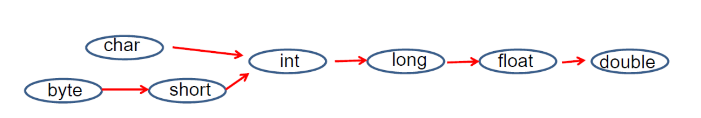
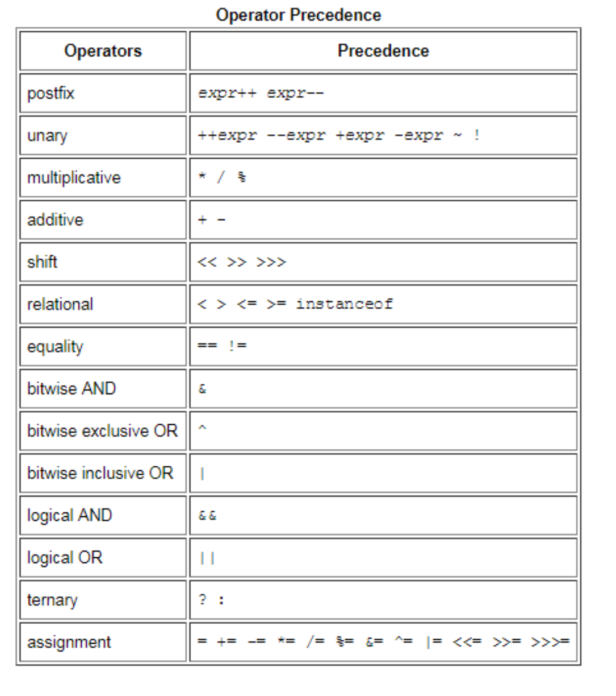

Chapter I: Syntax
- Keywords
- Variables
- Operators
- String
1. Keywords
| Key Words | |||||
|---|---|---|---|---|---|
| abstract | assert | boolean | break | byte | case |
| catch | char | class | const | continue | default |
| do | double | else | enum | extends | final |
| finally | float | for | goto | if | implements |
| import | instanceof | int | interface | long | native |
| new | package | private | protected | public | return |
| short | static | strictfp | super | switch | synchronized |
| this | throw | throws | transient | try | void |
| volatile | while |
Note: goto is a reserved keyword that has not been used.
2. Variables
2.1 Types: primitive type and reference type
- primitive type:
boolean, char, byte, short, int, long, float, double. - reference type: class, interface, array [].
2.2 Primitive type
| Type | Size | Range | Default Value |
|---|---|---|---|
| byte | 1 byte | -128 to 127 | 0 |
| char | 2 byte | 0 to 65536 | '\u0000' |
| short | 2 byte | -32768 to 32767 | 0 |
| int | 4 byte | -2^31 to 2^31-1 (about 2 billion) | 0 |
| long | 8 byte | -2^63 to 2^63-1 (about 8*10^18) | 0L |
| float | 4 byte | 3.4*10E38F | 0.0F |
| double | 8 byte | 1.79*10E308 | 0.0 |
| boolean | undefined | true or false | false |
- Only instance variable has default value.
- For local variable, it must be initialized.
- All reference type (instance variable): default value is null.
2.2.1 Type Conversion 
- byte, char, and short are all convert to int.
- boolean cannot be converted to any type.
Example: s += i vs s = s + i
- 1)
+=compound operator will do implicity conversion, no compilation error. so when data is overflow, you will get a wrong result but code runs well. - 2)
=will do data type check, you will see compilation error if data types are mismatch in two sides
short s = 1;
int i = 123456;
s += i; // no compilation error, return wrong result (-7615)
s = s + i // compilation error
3. Operators

Ex1: short-circuit
- The && and || operators "short-circuit", meaning they don't evaluate the right hand side if it isn't necessary.
- The & and | operators, when used as logical operators, always evaluate both sides. ```java public class Test { static int a = 5; static int b = 6; static int c = 7; static int d = 8;
public static void main(String[] args) { testOR(); testAND(); }
private static void testOR() { if (true | m1()) { System.out.println(a); // 10 } // "||" will stop once it finds the first "true" if (true || m2()) { System.out.println(b); // 6 } } private static void testAND() { if ((false & n1()) == false) { System.out.println(c); // 14 } // "&&" will stop once it finds the first "false" if ((false && n2()) == false) { System.out.println(d); // 8 } } private static boolean m1() { a = 10; return true; } private static boolean m2() { b = 12; return true; } private static boolean n1() { c = 14; return true; } private static boolean n2() { d = 16; return true; } }
## 4. String
Ex1: Convert int to String
// bad String s = intValue + "";
// good String s = String.valueOf(intValue);
Ex2: Print string as chars
String s = "Hello World"; IntStream stream = s.chars(); stream.forEach(p -> System.out.println(String.valueOf(p)));
Ex3: String concat
String s1 = "Hello"; String s2 = "World";
// System.out.println(s1.concat(" ").concat(s2));
// bad implementation String s = s1 + " " + s2; System.out.println(s);
// Better solution StringBuilder sb = new StringBuilder(); System.out.println(sb.append(s1).append(" ").append(s2).toString());
// good solution (delimiter with " ") StringJoiner stringJoiner = new StringJoiner(" "); System.out.println(stringJoiner.add(s1).add(s2));
// delimiter with "," StringJoiner sj = new StringJoiner(","); System.out.println(sj.add("one").add("two").add("three"));
// delimiter with "," and start with "{" and end with "] " StringJoiner sj1 = new StringJoiner(",","{","]"); System.out.println(sj1.add("one").add("two").add("three"));
// System.out.println(String.join(",", "one", "two", "three"));
Ex4: **String equals**
//Bad: args.equals("local");
//Good: avoid null pointer exception "local".equals(args);
// google guava Object.equals(obj1, obj2);
Ex5: **StringBuilder vs StringBuffer**
StringBuilder is faster but not thread-safe. StringBuffer is slower but thread-safe.
Usually, StringBuilder is used to build string. ```